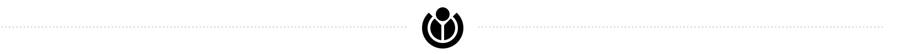

Resident Evil 2 là một trò chơi video kinh dị sinh tồn do Capcom phát triển,
sản xuất và phát hành cho PlayStation năm 1998.
Người chơi điều khiển Leon S. Kennedy và Claire Redfield,
những nhân vật phải thoát khỏi Thành phố Raccoon sau khi người dân bị biến thành xác sống do tác động của vũ khí sinh học,
hai tháng sau sự kiện của Resident Evil gốc. Trò chơi tập trung vào khám phá, giải đố và chiến đấu;
sự khác biệt chủ yếu so với phần game trước là cốt truyện và lối chơi phân nhánh,
khi mà mỗi nhân vật người chơi sẽ có mạch truyện, cộng sự và trở ngại riêng.
Resident Evil 2 do Kamiya Hideki đạo diễn, Mikami Shinji sản xuất và được phát triển bởi một nhóm khoảng 50 người trong 21 tháng.
[ Đọc tiếp ] Mới chọn: Đặng Nhật Minh · Lớp thiết giáp hạm Kaiser · "Government Hooker"
…được khai trương vào năm 1997,
Saigon Water Park đã trở thành công viên nước đầu tiên tại Việt Nam?
…theo tương truyền,
lễ hội của người Bạch tại Trung Quốc Tam Nguyệt Nhai được tổ chức trên mặt Trăng?
…Medan dưới sự lãnh đạo của Rahudman Harahap đã cố gắng giải tỏa các trang trại lợn trong phạm vi thành phố,
nhưng phải hoãn lại sau sự phản đối từ người dân địa phương?
…nhờ vai diễn trong phim truyền hình Khúc hát mặt trời,
Nhã Phương đã trở thành nữ diễn viên Việt Nam đầu tiên được trao giải tại Giải thưởng Truyền hình Quốc tế Seoul?
Trà sen Tây Hồ là một đặc sản trong ẩm thực Hà Nội làm từ hoa sen mọc trên hồ Tây.
Người ướp sẽ phải sử dụng trà đặc sản riêng biệt từ một số vùng tại Thái Nguyên, Hà Giang hoặc Phú Thọ.
Sau khi tuyển chọn sen và trà một cách kĩ càng, người làm sẽ tiến hành trải qua một công đoạn ướp và sấy một cách phức tạp và cầu kì.
Trà sen Tây Hồ thường có giá thị trường trên nền kinh tế Việt Nam ở mức tương đối đắt và kén người tiêu dùng.
Loại trà này cũng đã được phổ biến tại nhiều thị trường khác trong và ngoài Việt Nam.
Trà sen Tây Hồ còn được xem là thức uống đáng chú ý trong nền văn hoá trà tại Việt Nam.
Ngoài ra, nghệ thuật ướp trà sen cũng đã trở thành nét văn hóa đặc trưng của Hà Nội. [ Đọc tiếp ]
Mới chọn: Pháp Duyên Tự · Ana Lucrecia Taglioretti · Trận lụt bia Luân Đôn
Vào năm 2006, tổng cộng 18 đĩa đơn đứng vị trí quán quân trên bảng xếp hạng Billboard Hot 100,
là bảng xếp hạng các đĩa đơn thành công nhất trên thị trường âm nhạc Mỹ.
Bảng xếp hạng được ấn hành bởi tạp chí Billboard và các số liệu xếp hạng được tổng hợp bởi Nielsen SoundScan dựa trên doanh số đĩa thường,nhạc số và tần suất phát thanh.
Năm này có số lượng đĩa quán quân nhiều nhất trong năm kể từ năm 1991.
Bảng xếp hạng Mặc dù có 19 đĩa quán quân trong 52 ngày ấn hành của Billboard nhưng đĩa đơn "Don't Forget About Us" của Mariah Carey không được tính do đã quán quân từ 2005.
[ Đọc tiếp ] Mới chọn: Đảo có người của Croatia · Đĩa đơn quán quân Hot 100 năm 2004 (Mỹ) · Hoàng đế nhà Tống
Khoa học tự nhiên
Địa chất học ⋅
Địa lý học ⋅
Hóa học ⋅
Khoa học máy tính ⋅
Logic ⋅
Sinh học ⋅
Thiên văn học ⋅
Toán học ⋅
Vật lý học ⋅
Y học ⋅
Khoa học xã hội
Chính trị học ⋅
Giáo dục ⋅
Kinh tế học ⋅
Lịch sử ⋅
Luật pháp ⋅
Ngôn ngữ học ⋅
Nhân chủng học ⋅
Tâm lý học ⋅
Thần học ⋅
Triết học ⋅
Xã hội học ⋅
Kỹ thuật
Công nghiệp ⋅
Cơ học ⋅
Điện tử học ⋅
Giao thông ⋅
Kiến trúc ⋅
Năng lượng ⋅
Người máy ⋅
Nông nghiệp ⋅
Quân sự Y tế ⋅
Văn hóa
Âm nhạc ⋅
Chính trị ⋅
Du lịch ⋅
Điện ảnh ⋅
Giải trí ⋅
Vũ đạo ⋅
Nghệ thuật ⋅
Phong tục tập quán ⋅
Thần thoại ⋅
Thể thao ⋅
Thời trang ⋅
Tôn giáo ⋅
Văn học ⋅
Tham gia Wikipedia
Wikipedia là dự án bách khoa toàn thư mở, đa ngôn ngữ mà mọi người đều có thể tham gia đóng góp.
Mục tiêu của Wikipedia là xây dựng một bách khoa toàn thư hoàn chỉnh, chính xác và trung lập.
Sự phát triển của Wikipedia tiếng Việt phụ thuộc vào sự tham gia của bạn.
Dù là tạo một bài mới, thêm nội dung, sửa lỗi chính tả hay bổ sung hình ảnh minh họa, thì bạn cũng đã góp phần xây dựng để Wikipedia tiếng Việt ngày một phát triển.
Đây là Wikipedia phiên bản tiếng Việt. Hiện nay, Wikipedia còn có nhiều phiên bản ngôn ngữ khác,
dưới đây là các phiên bản ngôn ngữ lớn nhất.
Anh (English) ⋅
Ả Rập (لعربية) ⋅
Ba Lan (Polski) ⋅
Bồ Đào Nha (Português) ⋅
Đức (Deutsch) ⋅
Hà Lan (Nederlands) ⋅
Nga (Русский) ⋅
Nhật (日本語) ⋅
Pháp (Français) ⋅
Tây Ban Nha (Español) ⋅
Thụy Điển (Svenska) ⋅
Trung (中文) ⋅
Ukraina (Українська) ⋅
Việt ⋅
Ý (Italiano)
Ba Tư (فارسی) ⋅
Basque (Euskara) ⋅
Bulgaria (Български) ⋅
Catalunya (Català) ⋅
Đan Mạch (Dansk) ⋅
Hàn (한국어) ⋅
Hebrew (עברית) ⋅
Hungary (Magyar) ⋅
Indonesia (Bahasa Indonesia) ⋅
Malaysia (Bahasa Melayu) ⋅
Mân Nam (Bân-lâm-gú) ⋅
Na Uy (Bokmål) ⋅
Phần Lan (Suomi) ⋅
Quốc tế ngữ (Esperanto) ⋅
România (Română) ⋅
Séc (Česky) ⋅
Serbia (Српск) ⋅
Serbia-Croatia (Srpskohrvatski) ⋅
Thổ Nhĩ Kỳ (Türkçe)
Anh đơn giản (Simple English) ⋅
Albania (Shqip) ⋅
Asturias (Asturianu) ⋅
Bosnia (Bosanski) ⋅
Croatia (Hrvatski) ⋅
Estonia (Eesti) ⋅
Galicia (Galego) ⋅
Hy Lạp (Ελληνικά) ⋅
Latvia (Latviešu) ⋅
Litva (Lietuvių) ⋅
Macedonia (Македонски) ⋅
Malayalam (മലയാളം) ⋅
Na Uy (Nynorsk) ⋅
Slovak (Slovenčina) ⋅
Slovenia ⋅
(Slovenščina) ⋅
Thái (ไทย)

Wikipedia trực thuộc Wikimedia Foundation, một tổ chức phi lợi nhuận cũng đồng thời điều hành nhiều dự án khác.
Các dự án này hoặc là đa ngôn ngữ hoặc đã có phiên bản tiếng Việt.

 Bạn có biết
Bạn có biết
 Các lĩnh vực
Các lĩnh vực